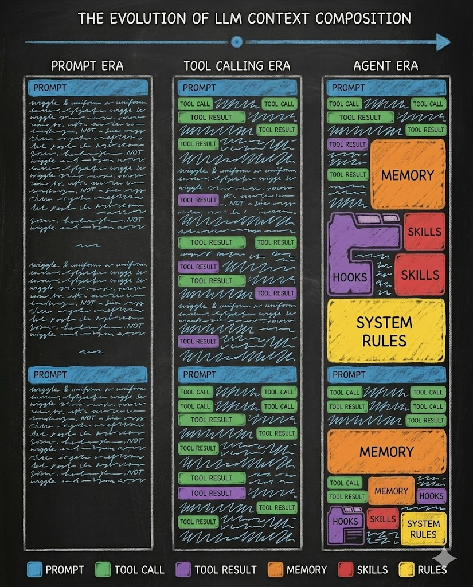
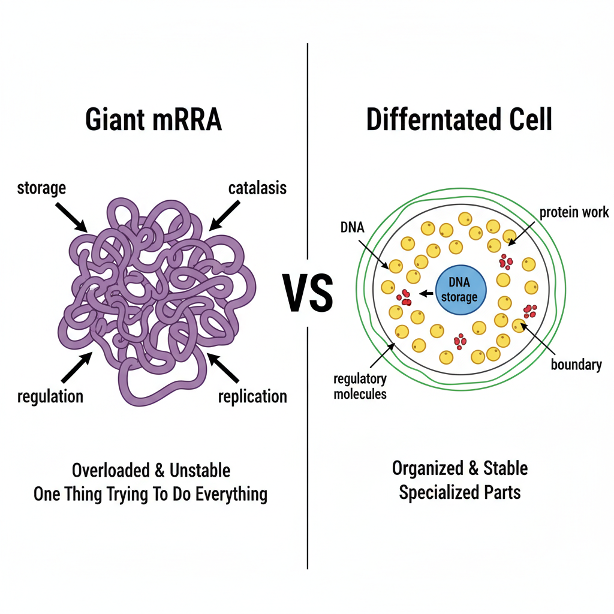
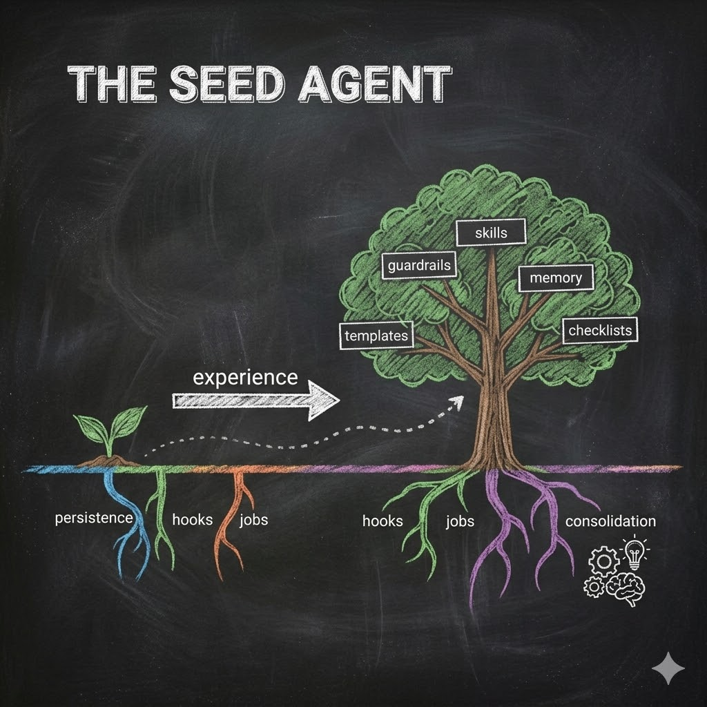

We Could Have Had AGI By Now
We could have had AGI by now.
Not the sci-fi kind. Not a god in a box. The practical kind — a system that learns a profession, keeps working for weeks, gets better from experience, and does not need someone watching it every thirty minutes. The kind you run on your own computer for less than a hundred dollars a month.
Not an engineered artifact with a fixed design. A complex system — one where capabilities emerge from simple parts interacting. The way a living organism emerges from cells, not from a blueprint.
The building blocks have been available for months. None of them are exotic. None of them required a breakthrough. What they required was a different bet: scale the architecture, not just the model.
LLMs Are Electricity. Agents Are Toasters. (Again.)
If you read the first essay, you already know: LLMs are electricity. Agents are toasters. The structure turns raw power into repeatable work.
This essay extends that idea to a harder question: what would actual AGI look like, and why does scaling the electricity feel like the wrong path?
Scaling the electricity will not build the toaster. It will build a brighter arc.
But here is the thing: do not build a toaster. A toaster is an engineered artifact. Fixed wires, fixed outcome. No matter how much toast it makes, it never becomes a television. It cannot grow new capabilities from experience. That is the nature of engineered things — they do exactly what they were designed to do, nothing more. If something like AGI emerges from a token generator, it will not be because someone engineered a better appliance. It will be because someone grew a complex system — one that rewires itself through use.
A Lawyer Is Not One Giant Thought
People overestimate how much a profession is raw IQ and underestimate how much it is disciplined workflow.
A competent professional is a pipeline: intake, scoping, research, synthesis, drafting, review, iteration, risk management. Most of these steps are not mysterious. They are repeatable.
The hard part is not generating text. The hard part is staying on every step, holding scope, remembering constraints, and avoiding the same mistakes twice. None of that survives when your tokens vanish the moment the context window fills up. We solved the generation problem. What we never solved is the preservation problem — how to keep those tokens organized, accessible, and persisted into something durable past the next session. A bigger generator just produces more tokens to lose.
That is organization. Not intelligence.
If you can build that organizational pipeline — and make it persistent, inspectable, and self-improving — you have something that behaves like professional competence. Even with a smaller model as the engine.
Where Does the Context Come From?
Here is a diagnostic you can run on any "agent" system:
At a random moment during a long task, snapshot the full context window and ask: where did all of this come from?
Some of it is fresh — tokens the model just generated. Some came through tools — the model read a file, searched the web, ran a command.
But in a well-structured agent, there is a third layer: context that arrived without the model asking. Instruction files loaded automatically when it entered a directory (the instruction files from the first essay). Hooks that injected rules before a tool ran. Memory retrieved because a policy required it.
This is how compartmentalized knowledge finds its way into the conversation — not through the model’s choices, but through pathways the architecture guarantees.
If almost all of it is fresh tokens, you are still trying to get the toaster out of electricity.
If a significant fraction is injected by durable structure, you are moving toward a real agent.
A system that regenerates its entire operational state from its own token stream is a closed loop. It can be clever, but it is fragile. A system that maintains state outside the token stream has independent anchors. It can recover. It can be audited. It can be upgraded in parts.
This is the difference between a monologue and an organism.

Think about context composition — not just how much the model generates on its own, but where the rest comes from. Balanced composition means every part of the agent’s structure that should influence its thinking has a pathway into the context. That balance is what turns a token stream into situated awareness.
Biology Did Not Scale One Molecule
Nature does not scale a single component to infinity. Nature differentiates.
Imagine nature stumbling upon mRNA — a molecule that can both hold information and perform chemistry. Now imagine evolution trying to scale that one molecule into a giant monolith that stores all instructions, catalyzes all reactions, and regulates itself internally. In principle, maybe it could work.
But evolution favored composition over scale. The path to greater reliability was not a bigger molecule — it was more specialized parts working together. DNA became long-term storage. Proteins became functional workhorses. Lipid membranes created boundaries. Regulatory networks added coordination — chemical signals that kept the parts in sync. Later, nervous systems emerged as a higher-order organizational layer that no longer operates at the molecular level at all.
Now think about another complex system: the brain. In A Thousand Brains, Jeff Hawkins describes each cortical column as an association engine — it maps what it senses to what it expects, much the way an LLM maps the words it has seen to the words it predicts will come next — building semantic associations between everything it encounters. A single cortical column is powerful. It can learn, generalize, and predict. But intelligence did not emerge from one enormous super-column. It emerged from thousands of columns connecting, specialized regions differentiating, and coordinated subsystems — each handling a different aspect of thought.

When we scale only the model, we are building the giant mRNA. When we scale architecture, we are building the organism.
What does differentiation buy you? Each part adapts locally without breaking the whole. Parts specialize without tangling into one giant parameter space. You can swap a module and keep the organism. Fast reflexes and slow remodeling happen on different timescales. And when one part fails, the identity survives.
And that replaceability is not theoretical. New kinds of token generators are already emerging — joint embedding models that reason in continuous space without generating tokens one at a time, diffusion-based language models that generate text through entirely different mechanisms. The agent does not care which engine powers it. It metabolizes tokens regardless of their source. When the next engine arrives, the organism absorbs it. The structure persists. The growth continues.
And this is why biology keeps showing up. Not as metaphor. If something like AGI ever works, it will not be an engineered artifact — not a car, not a plane, not a very sophisticated toaster. It will be a complex system. Intelligence emerging from primitives interacting, not from any single component getting bigger. Biology is not the analogy here. It is the category.
And that category comes with a powerful toolkit. Once you see the agent as a complex system, you inherit design principles that have been studied for decades. Every complex system that already exists — biology, cities, economies, ecosystems — becomes a source of patterns for your agent. What do feedback loops look like in an agent? What about second-order effects? What about emergence? These are not academic abstractions — they are thinking tools that map directly onto the decisions you will face when building agents. Shane Parrish’s The Great Mental Models series is a good place to start building that toolkit.
So if intelligence is a complex system, what are the primitives? In the previous essay, we identified compartmentalization as the core principle — every piece of knowledge has a home, every behavior has a boundary. That principle becomes the foundation for the primitives we need: bounded units of work that do not bleed into each other, that can be tracked, that can be managed independently.
Some primitives are obvious — files, directories, instruction files that load automatically when the agent enters a folder. These have existed since the first CLI agents shipped.
But one primitive is not obvious at all, and it changes everything: prevent the agent from stopping before it is done. Ralph Loop is a plugin that does exactly this — when the agent finishes working and tries to stop, Ralph Loop blocks the stop and repeats the prompt. The agent keeps going until it produces a satisfactory result. One hook, one looped instruction. That simple trick delivers a more capable and reliable agent.
These are the control knobs of agent architecture — concepts worth learning, the way you once learned that a presentation is made of slides, each slide has a main area and a notes area, and you can add animations and transitions to express your ideas. Agent architecture has its own building blocks. The more of them you understand, the better you can shape what your agent becomes.
Now extend that idea. Give each unit a name, a state, a place on disk. Let units spawn other units. Let them carry observations that must be processed before they close. You are no longer just blocking a stop signal. You are building a job system.
The Heartbeat: Where Agency Actually Begins
Here is the smallest architectural feature that changes everything:
Define a persistent list of jobs on disk (not in the model) — a local file in a structured format like JSON. Mark jobs active or completed — or add whatever states and fields the work demands. Install a hook that intercepts “Stop” and blocks it while any job is active. The agent keeps working until the job queue is empty.
This is different from Ralph Loop’s simple prompt repetition. Here, the jobs themselves — their flags, their states — determine whether the agent can stop. And once you have structured jobs on disk, you can invent different forms of them: jobs with budgets, jobs with deadlines, jobs that must verify their own output before closing.
This is not fancy. It is a heartbeat.
Then you scale it. Every job carries an observation field — what happened, what was learned, what went wrong. Hooks force the agent to update this field regularly as it works, accumulating observations throughout the task. The job cannot close until its observation field has been processed into long-term memory. The system cannot mark “done” without first digesting what it did.
You now have a system that cannot "forget" by accident. It must metabolize its stream of tokens into something durable. It must tidy its state.
If you prefer different terminology, call them behaviors, intentions, processes, or obligations. The organizational principle is the same: persistent state plus enforcement hooks.
This pattern is platform-agnostic. Any CLI agent with a Stop-blocking hook can run it. We will take this heartbeat apart — the job objects, the states, the observation fields — when we build the seed agent’s skeleton in a later essay.
Hooks Are the Missing Evolutionary Layer
Modern CLI agents give you something that looks small but is profound: interception points.
Stop hooks — fire when the agent tries to finish, letting you block premature exits. Pre-tool and post-tool hooks — fire before and after every action, letting you inject rules or log what happened. Compact hooks — fire when the agent summarizes its context to free up space, the moment where forgetting usually happens and where your rules can prevent it. Notification hooks, session events, and more.
Each one is a place where the architecture — not the model — decides what happens next. The model proposes. The structure disposes.
Hooks are the agent’s sensory layer — how it perceives its own actions and reacts to events. Every hook records what the agent decided and what happened next. That record becomes the raw material for learning: you review it, see what worked, and tighten the rules. Without hooks, the agent acts blind. Tokens flow, but nothing sticks.
When hooks also log transactions, you get a continuous record of what the agent did and why. That record enables something crucial: learning from what actually happened.
Consolidation: Where the System Learns
Humans do not improve only while acting. They consolidate. In the first essay, we introduced a five-phase workflow — Observe, Plan, Execute, Verify, Condense. That last phase, Condense, is where consolidation lives. Now we see why it matters at scale.
A long-running agent should do the same. During work: collect raw traces — tool calls, file edits, outcomes, feedback. During consolidation: analyze traces, detect patterns, propose changes.
Crucially, changes are not magic. They are edits: update an instruction file — the same CLAUDE.md files we introduced in the first essay, now serving as the working memory layer the agent writes back to. Refine a checklist. Add a guardrail hook. Create a specialized skill module. Eventually, fine-tune a small internal decision model for one narrow choice.
This is how you get professional competence without requiring the main model to internalize everything.
The Seed Agent: Small Structure That Grows
Instead of asking "how smart must the model be?", ask "what is the smallest organized structure I can plant that will grow into professional competence?"
A seed agent is not a blueprint with nine named roles. It is a minimal structure built from the primitives this essay describes: persistent state, interception hooks, compartmentalized work, and consolidation mechanism. Four capabilities. That is enough to start.
The important property is not what the seed contains on day one. It is that the seed grows. As the agent works, new patterns get codified. New operations emerge from experience. New guardrails get added after failures. The structure accumulates — but the identity holds. You can still point at it and say: this is the same agent, more experienced.
This is what makes a seed different from a prompt. A prompt resets every session. A seed compounds. The seed carries enough structure — enough cognitive machinery — to keep extending itself for any user. It stays true to its design while adapting to whatever profession or workflow it encounters.
Different users, same seed, different cognitive organisms.
We will build one of these seeds — piece by piece — in the essays that follow.
Think about your own work. What you do as a professional is also a complex system — a web of primitives you perform every day: research, review, draft, delegate, consult, negotiate. Your professional competence is not one giant skill. It emerges from these primitives interacting in ways that years of experience have refined. Remember — a lawyer is not one giant thought. Describe a job to your seed agent — what it involves, what it produces, what it must check — and the agent incorporates that job into its growing cognitive structure.
All through conversation.
The more jobs you describe, the more capable the organism becomes.

Internalization Is Not the Answer
The standard objection: give the model enough capacity and it will learn to plan, remember, verify, and regulate itself.
Two problems.
First, even if internalization is possible, it is not modular. You cannot inspect the "hook" inside the weights. You cannot swap it. You cannot patch it without touching everything else. Internalized structure is trapped where you cannot see or change it.
Second, internalization is economically brutal. You are paying model-scale costs to simulate what software can do cheaply and deterministically. A verification checklist costs almost nothing. A budgeting rule costs almost nothing. A tool permission gate costs almost nothing. If a five-line checklist catches mistakes that a billion-dollar model misses, the checklist wins.
What a Year of Experience Looks Like
Imagine two copies of the same model, given the same profession, running for a year.
One has no architecture around it. Every session resets to zero. It improves only when someone retrains it — expensive reinforcement learning runs that touch every weight at once. Between runs, it returns to baseline. Impressive in any given conversation. Amnesiac across all of them.
The other sits inside a filesystem brain. It logs what it does. It digests what it learned before closing each job. After a year, it has accumulated thousands of case notes, a playbook of failure modes, specialized templates, refined guardrails, and an evolving internal organization of knowledge.
Same engine. Same electricity. One forgot everything. The other became a professional.
The Practical Roadmap
If you want to build toward AGI-like autonomy now, do not wait for the next model. Build these four layers:
- A filesystem brain with compartmentalized memory. Persistent state with clear boundaries — knowledge files, job ledgers, memory stores, and instruction files (
CLAUDE.md,AGENT.md) scoped to where they are needed. - A hook system that enforces phases and permissions. Interception points where deterministic rules override probabilistic behavior.
- A job system that keeps the agent alive until obligations are met. Persistent jobs as structured objects on disk. Stop-blocking hooks that prevent premature exit. Observation fields that force the agent to record what it learned before closing. This is what gives the agent a heartbeat — and what makes self-improvement possible, because the agent cannot skip its own learning.
- A consolidation loop that converts traces into durable upgrades. Consolidation phases where logged experience is analyzed, distilled, and written back as improved instructions, refined checklists, and new skills.
Notice that the job system includes maintenance. The agent does not just process work — it also spends compute on itself: managing memory, refining instructions, consolidating experience. Like a cell that does not just process nutrients but also repairs itself, manages waste, and maintains its own membrane.
Why I Say “We Could Have Had It by Now”
Because none of the architecture described in this essay required a research breakthrough. Every primitive — persistence, hooks, jobs, consolidation — is standard software. The only thing missing was the bet.
Previous attempts at agent autonomy — AutoGPT, BabyAGI, and their descendants — were still engineered systems. They defined the agent directly: rigid pipelines, fixed roles, specific task flows. When the plan did not fit reality, the agent broke. They proved that top-down engineering cannot produce durable autonomy.
What we needed was complex system design — not defining the agent directly, but defining primitives and letting the agent emerge from their interaction. Hooks arrived in CLI frameworks recently. They are a qualitatively different design. Imagine if even a fraction of the effort spent on prompt optimization had gone into long-horizon agent experiments instead. We would already have more systems that keep working for weeks, learn workflows, and behave consistently for a given user.
That is the kind of “AGI” most teams actually want: a durable collaborator that gets better.
The Question Was Always Wrong
The industry keeps asking: “When will the model become AGI?”
The model was never going to become AGI. The organism was.
We have the primitives. We have had them for months.
Build the organism.
Essay 2 of 8 in the Hadosh Academy series on agent architecture.
Previous: “LLMs Are Not the Agents” — the agent is the filesystem, not the model.
Next: “Your Brain Was Never Built for This” — what happens when you extend your brain with a digital cortex.
Comments